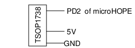
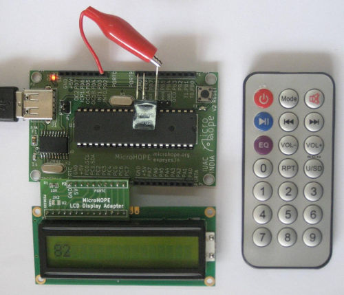

he infrared signals emitted by the remote controls of TVs etc can be captured using the TSOP1738 IR receiver. The program ir-recv.c uses an interrupt sevice routine to decode this signal. The output of the chip is connected to bit 2 of PORTD, as shown in the figure below. Press some buttons on the remote control panel. The received number will be displayed on the LCD display of microHOPE. The code ir-recv.c, can be modified to work with the single byte IR transmitted from expEYES. The received byte is displayed on the LCD display. Dowload ir-recv.c
 